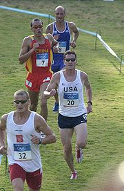

| The modern pentathlon is a sports contest that includes five events: pistol shooting, épée fencing, 200 m freestyle swimming, show jumping, and a 3 km cross-country run.[1] The sport is governed by the Union Internationale de Pentathlon Moderne (UIPM), the International Modern Pentathlon Union. The sport is governed by the Union Internationale de Pentathlon Moderne (UIPM), the International Modern Pentathlon Union. |  | |
| The modern pentathlon is a sports contest that includes five events: pistol shooting, épée fencing, 200 m freestyle swimming, show jumping, and a 3 km cross-country run.[1] The sport is governed by the Union Internationale de Pentathlon Moderne (UIPM), the International Modern Pentathlon Union.The modern pentathlon is a sports contest that includes five events: pistol shooting, épée fencing, 200 m freestyle swimming, show jumping, and a 3 km cross-country run.[1] The sport is governed by the Union Internationale de Pentathlon Moderne (UIPM), the International Modern Pentathlon Union. | ||
The modern pentathlon was invented by the Baron Pierre de Coubertin, the founder of the modern Olympic Games.[1] The name derives from the Greek penta- "five" and -athlon "contest".[1] The addition of modern to the name distinguished it from the original pentathlon of the ancient Olympic Games, which consisted of the stadion foot race, wrestling, long jump, javelin, and discus. As the events of the ancient pentathlon were modeled after the skills of the ideal soldier of that time, Coubertin created the contest to simulate the experience of a 19th century cavalry soldier behind enemy lines: he must ride an unfamiliar horse, fight with pistol and sword, swim, and run.[1] The event was first held at the 1912 Olympic Games, and was won by Swedish athlete Gösta Lilliehöök. The modern pentathlon has been on the Olympic program continuously since 1912. A team event was added to the Olympic Games in 1952 and discontinued in 1992. An event for women was added in 2000.[1] In non-Olympic years, a World Championship is held, beginning in 1949. Originally the competition took place over four or five days; however in 1996 a one-day format was adopted in an effort to be more audience-friendly.[1] In spite of the event's strong pedigree in the modern Olympics, and its status as the only event created specifically for the modern Olympic Games, its lack of widespread popularity outside Eastern Europe has led to calls for its removal from the Olympic Games in recent years. However, a vote by the IOC on July 8, 2005, keeps it in the Olympic program at least until 2012.